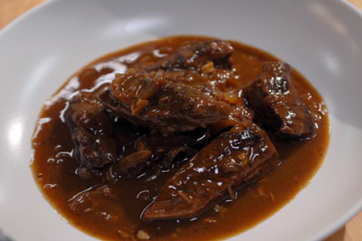

BEEF IN BEER

Ingredients
- 500g of cheap beef pieces (Stewing steak usually is cheap)
- 500mls of real ale
- 4 large onions
- 2 fat cloves of garlic
- Tbsp of plain flour
Methods
- Raw beef, roll it in the flour. Fry 4‐5 pieces at a time in a hot saucepan to
seal. Put to one side when all done.
- Cut the onions into quarters. Fry in the same frying pan as the beef to soak up the juices.
- Towards the end of frying the onion (They should be nicely brown round the egdes) throw in the smashed up cloves of garlic.
- Transfer the beef, onions, garlic to a deep casserole dish. Stir in the remaining
flour.
- Pour on the bottle of beer. (It isn't going to be wasted!)
- Cover and cook at 150 for about 2 and a half hours. It will be gorgeous when it comes out. Serve with smash.
Back to Recipe List.